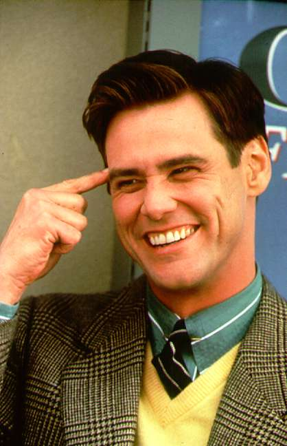

Unn De Val
Photographer
Я фотограф из Казахстана, Алматы. Владею студией по адресу: ул. Гоголя 40, 2 этаж. Опыт работы: 15 лет, фотографировал с раннего детства, мое хобби переросло в работу мечты, продолжаю следовать своим амбициям и покорять сообщество фотографов!
Продаю свои фотографии в высоком качестве с ограниченным тиражом, по уточнению определенного размера и выбора определенной фотографии обращайтесь ко мне.